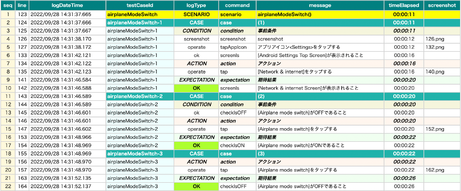

Log language
You can change language for logging and reporting using logLanguage parameter.
Note
- This is not language setting parameter for Android/iOS devices. You should use Appium’s capability setting instead. See Device language
Supported language
| logLanguage | Language |
|---|---|
| ""(empty) | English |
| ja | Japanese |
Example
AndroidSettingsDemo.kt
(kotlin/demo/AndroidSettingsDemo.kt)
@Test
fun airplaneModeSwitch() {
scenario {
case(1) {
condition {
it.launchApp("Settings")
.screenIs("[Android Settings Top Screen]")
}.action {
it.tap("[Network & internet]")
}.expectation {
it.screenIs("[Network & internet Screen]")
}
}
case(2) {
condition {
it.select("{Airplane mode switch}")
.checkIsOFF()
}.action {
it.tap("{Airplane mode switch}")
}.expectation {
it.select("{Airplane mode switch}")
.checkIsON()
}
}
case(3) {
action {
it.tap("{Airplane mode switch}")
}.expectation {
it.select("{Airplane mode switch}")
.checkIsOFF()
}
}
}
}
testrun.properties (default)
#logLanguage=
Result (default)

testrun.properties (ja)
logLanguage=ja
Result (ja)
